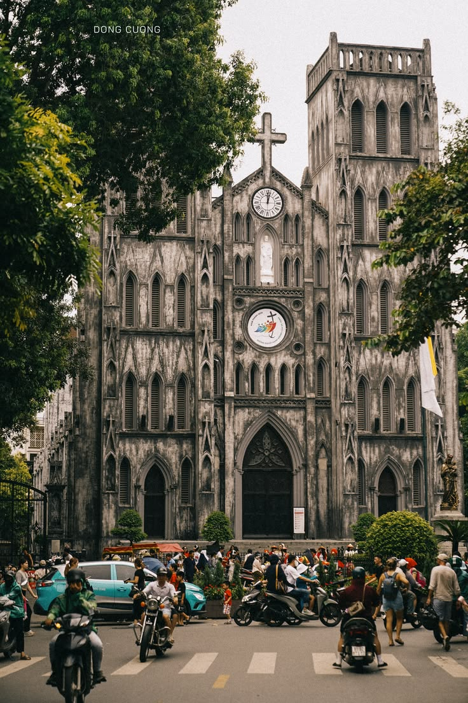

The city's iconic lake with the red Huc Bridge leading to a temple on a small island. Best at sunrise.
中文河内标志性的湖泊，红色的栖旭桥通向小岛上的玉山寺。日出时最美。
日本語赤いフック橋が小島の寺院へと続く、ハノイの象徴的な湖。日の出が最高。
Vietnam's first university (1076). Serene courtyards, ancient stelae, and centuries of scholarly heritage.
中文越南第一所大学（1076年）。宁静的庭院、古老的石碑和数百年的学术遗产。
日本語ベトナム初の大学（1076年）。静寂な中庭、古代の石碑、数世紀の学問の遺産。
UNESCO World Heritage Site. 1,000 years of Vietnamese imperial history in one complex.
中文联合国教科文组织世界遗产。千年越南皇城历史汇聚于此。
日本語ユネスコ世界遺産。1000年のベトナム帝国の歴史が凝縮された場所。
The final resting place of Ho Chi Minh. Open mornings only. Dress respectfully — no shorts.
中文胡志明主席的安息之地。仅上午开放。请着装得体，不可穿短裤。
日本語ホーチミン主席の眠る場所。午前のみ開放。服装は敬意を持って — 短パン不可。
Each street specialized in one trade — silk, silver, paper. A sensory overload of sounds, smells, and street life.
中文每条街专营一种行业——丝绸、银器、纸张。声音、气味和街头生活的感官盛宴。
日本語各通りが一つの商売に特化 — 絹、銀、紙。音、香り、路上生活の感覚の洪水。

Neo-gothic cathedral built in 1886. The square in front is Hanoi's best people-watching spot at night.
中文建于1886年的新哥特式大教堂。前面的广场是晚上观察路人的最佳地点。
日本語1886年建造のネオゴシック大聖堂。前の広場は夜の人間観察に最適。
Modeled after Paris's Palais Garnier, this 1911 masterpiece of French colonial architecture. Admire its illuminated facade by night, or catch a world-class performance inside.
中文以巴黎加尼叶歌剧院为蓝本的1911年建筑杰作。夜幕低垂时华灯初上的立面尤为震撼，亦可步入其中聆听世界级演出。
日本語パリのガルニエ宮をモデルにした1911年の建築傑作。夜のライトアップされた外観を眺めるか、館内で公演を鑑賞しよう。
Resting on a serene islet within West Lake, Hanoi's oldest Buddhist sanctuary dates back to the 6th century. Red stupas and an ancient Bodhi tree offer a soulful escape.
中文始建于公元6世纪，静静伫立在西湖小岛上的河内最古老佛教圣地。红砖佛塔与古老菩提树带来心灵的宁静。
日本語西湖に浮かぶ小島に佇む6世紀建立のハノイ最古の仏教聖地。赤い仏塔と菩提樹が都会の喧騒を忘れさせる。
A 1,000-year-old Vietnamese art form. Puppets dance on water to live traditional music.
中文千年越南艺术形式。木偶在水上随传统音乐翩翩起舞。
日本語1000年の歴史を持つベトナムの芸術。人形が伝統音楽に合わせて水上で踊る。
A leisurely ride through narrow streets at dusk. Negotiate the price before hopping on.
中文黄昏时分悠闲穿行于狭窄街道。上车前先谈好价格。
日本語夕暮れ時に狭い路地をのんびり走る。乗る前に価格交渉を。
A 700-year-old pottery village. Try the wheel yourself and bring home handmade ceramics.
中文拥有700年历史的陶瓷村。亲手体验陶艺轮，带走手工陶瓷。
日本語700年の歴史を持つ陶芸村。ろくろ体験をして手作り陶器をお土産に。
Drift by boat through limestone karsts and emerald waters. The 'Ha Long Bay on land.' Full day trip.
中文乘船穿越石灰岩溶洞和翡翠般的水域。被称为'陆地下龙湾'。需一整天。
日本語石灰岩の奇岩とエメラルドの水の中をボートで進む。'陸のハロン湾'。終日旅行。


.jpg)